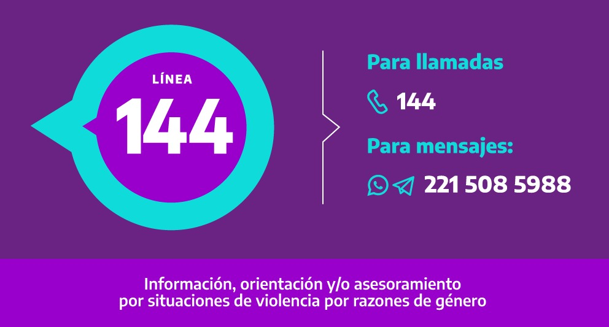

Contamos con profesionales especializados para la asistencia integral a personas que esten viviendo alguna situación de violencia por motivos de género. Contamos con espacios individuales y grupales para el acompañamiento psicológico, emocional y jurídico.
La Línea 144 brinda atención telefónica en situaciones de violencia por razones de género durante las 24 horas, los 365 días del año. Es gratuita y confidencial. La línea ofrece información, contención y asesoramiento a través de un equipo interdisciplinario. El mismo está compuesto por profesionales de las áreas del Derecho, la Psicología, el Trabajo Social y otras áreas afines, para la atención de todos los tipos y modalidades de violencia descritos en la ley 26.485: física, psicológica, sexual, económica y patrimonial, simbólica, política, doméstica, institucional, laboral, contra la libertad reproductiva, obstétrica, mediática y en el espacio público.
